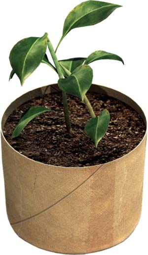

I use toilet paper rolls to make biodegradable seed starter pots.
Fill the “pot” with potting soil, plant your seeds and water gently. Put the seed pots under grow lights until they are ready to go outdoors. When you are ready to plant, you can either pull the cardboard away from the soil and put the plant in the ground, or simply unfold the bottom and plant the whole pot - the cardboard will slowly disintegrate.
|
 NATE SKOW Collect toilet paper rolls to make seed-starting pots for spring plantings.
|
NATE SKOW You can make biodegradable seed-start pots from toilet paper rolls. |
|